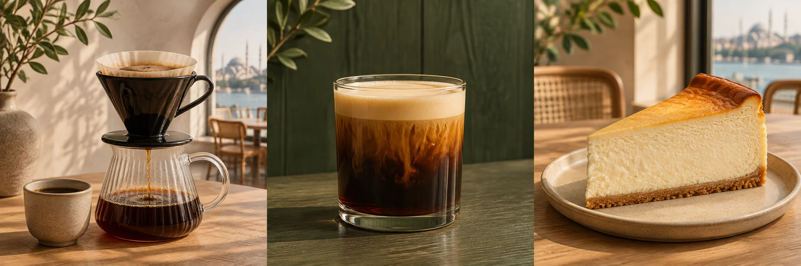
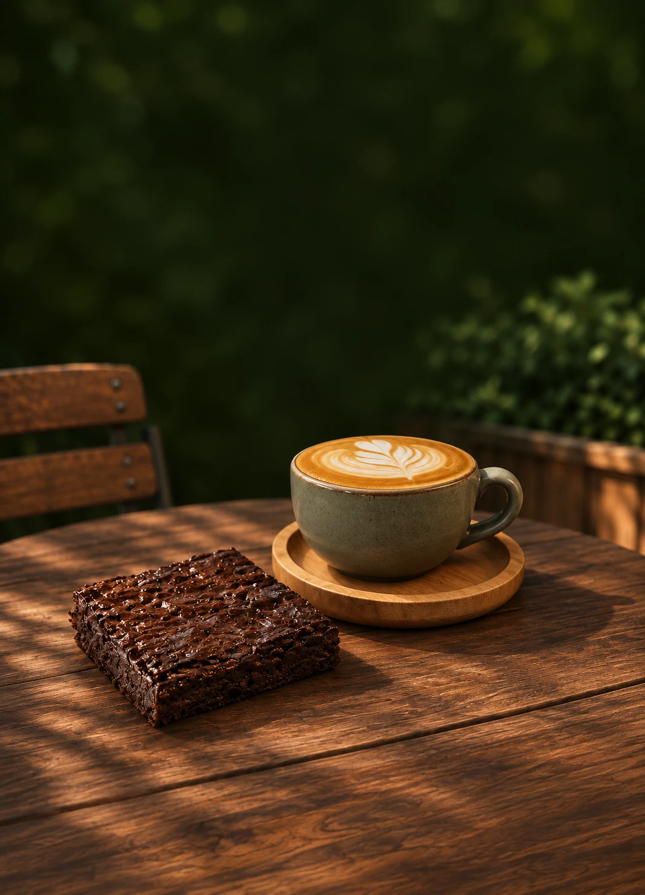
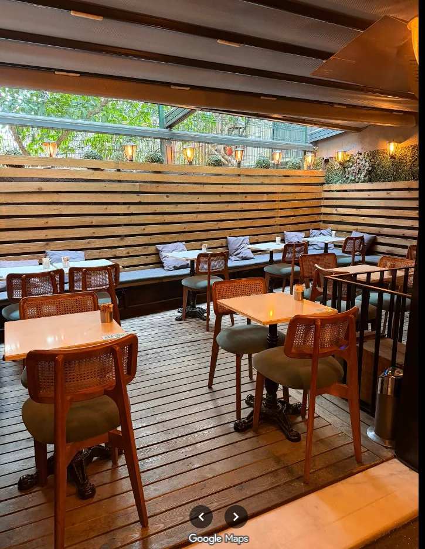
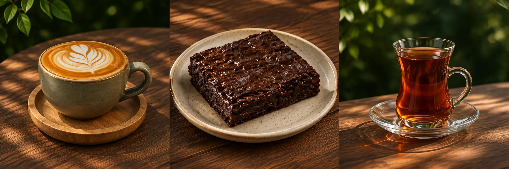

V60
Elle demlenen filtre kahve, çekirdeğin tadını merak edenlere.

Duatepe, Şişli
Kahve & tatlı
Filtre kahveden Nitro’ya, kahvenin yanına da bir dilim cheesecake.

Elle demlenen filtre kahve, çekirdeğin tadını merak edenlere.
İnce köpüğü ve yumuşak dokusuyla soğuk bir seçenek.
Kahvenin yanına kremamsı bir dilim.

Arka bahçe
Ahşap masalar, hasır sandalyeler ve sokaktan içeride bir bahçe. Arkadaşınla buluşmak veya tek başına kahve içmek için bir köşe bul.
Bahçeye uğraKahvenin ötesinde
Sütlü bir kahve, yoğun çikolata ya da sıcak bir çay. Masada biraz daha kalmak için.

Espresso ve süt, yumuşak bir fincanda.
Kahvenin yanına yoğun çikolatalı bir dilim.
Kahve yerine sıcak bir çay içmek isteyenlere.
Görseller temsilidir. Güncel seçenekleri kafeden öğrenebilirsiniz.
TAŞ CAFE’de bir gün
Baruthane’de güne bir fincan V60 ile başla.
Bir arkadaşınla buluş, kahvenin yanına cheesecake söyle.
İş çıkışı ya da yemekten sonra, bahçede sıcak bir çayla günü bitir.
Şişli, İstanbul
Güncel saatler ve masa durumu için arayabilirsiniz.